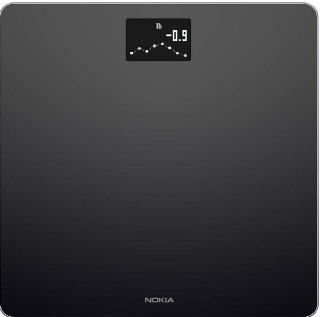
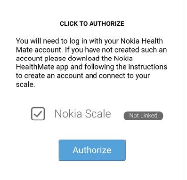
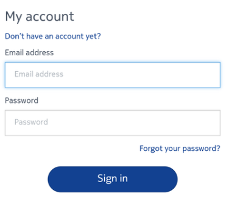
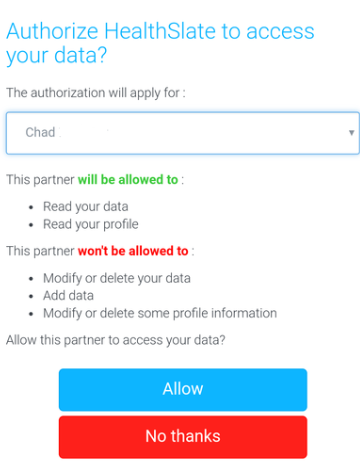
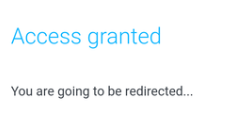

Weight Tracking: Nokia Scale
If the Health Mate® app is not already installed on your device, perform the following steps:
- Navigate to healthapp.nokia.com in your device’s web browser.
- Android device: select Google Play
iOS device: select App Store. - Select INSTALL.
For addional Nokia scale setup intructions please follow the link for Nokia support: Setting up your Nokia Body scale.

- Open the HealthSlate app
- From the HealthSlate home screen:
- IOS device: select More

- Android device: select the menu
 icon in the top left corner of the screen.
icon in the top left corner of the screen. - Select Settings.
- Select Manage Device Sync.
- Select Manage Nokia Scale.
- Check the box next to Nokia Scale and select Authorize.
- Enter the email and password you used with your Health Mate® account and select Sign in.
- Select Allow.
- You will be redirected back to the Settings screen. Your weights should now be synced between your Nokia Scale and your HealthSlate app.






- Press and hold the button at the back of your scale for a one second.
- Press the button again to change the unit.
- The unit change is confirmed a few seconds after you stop pressing the button.

For help connecting the Nokia to Bluetooth please follow the link for Nokia support: Connecting your Nokia Body scale to Bluetooth.
If you have any questions or issues regarding your Nokia scale, you can reach out to Nokia support directly. Nokia's support team is equipped to handle any issue with an order. All Nokia support team would require from one you:
- If there is an issue with shipping you will need The order number (starts with a Z usually)
- If there is an issue with the scale either set-up or after its in use you will need:
- Email connected to their Nokia health mate account
- Serial number of their scale: Where can I find the serial number of my Nokia product
- Email: corp-support@nokia.com
- Phone: 1-800-561-1634
- Online Form: Online help link
- Click on the device you need help with
- See if there is an area that describes your issue
- Look for an article that provides an answer to your issue